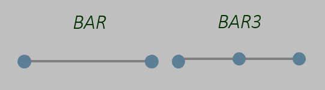
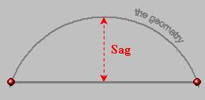
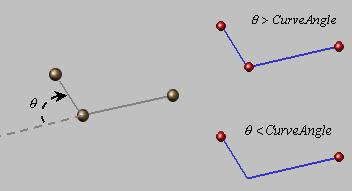

A "late type" must be given to indicate which type of mesh part is tobe created.
In the case of the Beam mesh part, the late type is "CATFmtBeamRulesMesher"
The Beam mesh part can be created by using Add method of SimMeshParts object.
Beam Mesh Part support can be set using following method of the SimMeshPart object:
-
AddSupport ( iSupport As AnyObject ) to add a new support to the mesh part
Global mesh specifications can be set or retrieved using following methods of the SimMeshPart object:
- SetAttributeValue (iSetType As String, iAttribute As String, iValue) to set a mesh attribute where:
- iSetType="Mesh"
- iAttribute is the attribute's name
- iValue is the attribute's value
- GetAttributeValue (iSetType As String, iAttribute As String, oValue) to get a mesh attribute where:
- iSetType="Mesh"
- iAttribute is the attribute's name
- oValue is the attribute's value
MeshSizeValue
type: double valuated to mesh elements
size.
default value: 10.
|
Attribute which specifies the mesh
element target size that the mesher tries to respect.
|
ElementOrder
type: integer valuated to:
- 1: to get a mesh with linear elements
- 2: to get a mesh with quadratic elements
default value: 1
|
Attribute which specifies the
number of
intermediate nodes per element edge,
either linear
BAR (on the left picture) or
quadratic BAR3 (on the right picture).
|
 |
AbsoluteSag
type: integer valuated to:
- 1: to create a mesh that does not respect sag
- 2: to create a mesh that respects sag
default value: 1
|
Attribute which specifies if the mesh is created with a maximum imposed sag.
|
 |
AbsoluteSagValue
type: double valuated to the target maximum sag when AbsoluteSag attribute is valuated to 2.
default value: 1.0
|
Attribute which specifies the maximum value of the absolute sag (distance between the geometry of the mesh ).
WARNING: It is taken into account only if the AbsoluteSag attribute is equal to 2
|
AutomaticMeshCapture
type: integer valuated to:
- 1: to ignore automatic mesh capture
- 2: to compute automatic mesh capture
default value: 1
|
Attribute which specifies if external meshes
must be captured. This attribute is linked to the attribute
AutomaticMeshCaptureTolValue.
|
AutomaticMeshCaptureTolValue
type: double valuated to the maximum distance under
which mesh is captured.
default value: 0.
|
Attribute which specifies the maximum distance for mesh capture: if a
mesh (element edges) is farthest from the support than this tolerance, it
will not be captured even if the AutomaticMeshCapture attribute is
valuated to 2.
WARNING: to precise exactly the list of mesh parts to capture,
the method SetMeshPartsToCapture of SimMeshPart
object can be used:
To retrieve the parents mesh parts another method of SimMeshPart
object can be used:
|
Global topology specifications can be set or retrieved using following methods:
- SetAttributeValue (iSetType As String, iAttribute As String, iValue) to set a topology attribute
- GetAttributeValue (iSetType As String, iAttribute As String, oValue) to get a topology attribute
iType is the type of specification and iType ="Topology" for Global Topology Specifications.
AngleBetweenCurves
type: double (radian unit)
valuated to the angle under which vertices are nactivated
default value: 20°
|
Attribute which specifies the maximum angle under which
a vertex connected exactly to two constrained edges can
be inactivated.
|

|
CATFmtExternalPointLocalSpec
|
Specification attributes are managed using SimTopologySpecification interface:
- Geometric attribute (supports)
Other attributes are managed using (GetAttributeValue, SetAttributeValue):
- ToleranceValue: double valuated to the
maximum distance between external point and its projection on geometry to mesh.
default value: 0.
default value: 1
|
Description: This specification is used in order to project external
points (points that don't belong to the geometry to mesh) in order to constrain the mesh.
External points definition (supports) and projection tolerance are mandatory. The overall
behavior is the following:
- if the distance between an external point and the geometry to mesh is greater than the
ToleranceValue, the point will not be projected
- if the distance between an external point and the geometry to mesh is lower than the
ToleranceValue, the point will be projected. The final location of this point depends on
ProjectOnGeometry attribute:
- if ProjectOnGeometry is equal to 1, the node representing the point will be
located exactly on the projection point on the surface geometry
- if ProjectOnGeometry is equal to 2, the node representing the point
projection will be located exactly on the external point (same Cartesian coordinates)
|
WARNING: 1D grouping specifications are the
only supports possible for Local Mesh 1D Specifications.
Before creating a Local Mesh 1D Specification,
it is
mandatory to create at least one
1D Grouping Specification with the targeted
geometry supports.
CATFmtStudioDistributionSpec
|
Distribution specification (named for example localSpec) can be applied
only on one edge resulting of an unique grouping specification.
Specification attributes are managed using SimMeshSpecification object:
- Geometric attribute (supports)
Other attributes are managed using (GetAttributeValue,
SetAttributeValue):
- Type: integer defining the type of distribution valuated to:
- 1: for a Uniform distribution (Isometric)
- 2: for an Arithmetic distribution
- 3: for a Geometric distribution
- 4: for a distribution defined by a Law
default value: 1
- Combination: integer indicating what are the
possible combination for Arithmetic or Geometric distributions valuated to:
- 1: for a distribution defined by the number of elements (NbElements)
and the size ratio of the elements (Ratio21)
- 2: for a distribution defined by the number of elements (NbElements)
and the size (Size1) at first vertex
- 3: for a distribution defined by the number of elements (NbElements)
and the size (Size2) at second vertex
- 4: for a distribution defined by the size ratio (Ratio21) and the size
(Size1) at first vertex
- 5: for a distribution defined by the size ratio (Ratio21) and the size
(Size2) at second vertex
- 6: for a distribution defined by the size (Size1) at first vertex and
the size (Size2) at second vertex
default value: 1
- CombinationUnif: integer indicating what are the
possible combination for Uniform distributions valuated to:
- 1: for a distribution defined by the number of elements (NbElements)
- 2: for a distribution defined by the size (Size1) of the elements
default value: 1
default value: 4
- RatioValue: double defining the ratio between the max
element size and the min element size (Ratio21)
default value: 1.
- Size1Value: double defining the size at first vertex
(Size1)
default value: 0.
- Size2Value: double defining the size at second vertex
(Size2)
default value: 0.
- Symmetry: integer valuated to:
- 1: to keep the distribution unchanged
- 2: to compute a symmetric distribution with current attributes
default value: 1
- Reverse: integer usable for Law and non Uniform distribution
valuated to:
- 1: to keep the distribution unchanged
- 2: to invert the distribution
default value: 1
|
Description: This specification creates a node distribution on an edge resulting of a 1D
grouping specification. Depending on the choice of the distribution type (Type attribute), Combination
or CombinationUnif attributes several various distributions "Option" can be computed. The next
table summarize all "Option":
- Isometric (Uniform) distribution is defined by only one attributes(Option 1 and 2):
- Nbelements (CombinationUnif= 1)
- Size1 (CombinationUnif= 2)
- Non isometric distribution is defined by two attributes as indicated in the next table. There
are six couples of attributes (Option 3 to 8):
- Nbelements and Ratio21 (Combination = 1)
- NbElements and Size1 (Combination = 2)
- NbElements and Size2 (Combination = 3)
- Ratio21 and Size1 (Combination = 4)
- Ratio21 and Size2 (Combination = 5)
- Size1 and Size2 (Combination = 6)

The next table shows examples of various distributions using additional Symmetry and Law attributes.

|
History
| Version: 1 [December 2016] |
Document created |